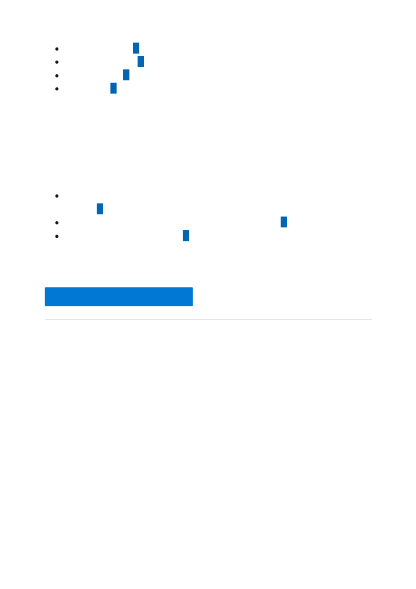

Additional resources
Documentation
Decision
Staying informed about features in a new release or news on the Azure blog can help
you find the difference between a programming error, a service bug, or a feature not yet
available in Cognitive Services.
Learn more about product updates, roadmap, and announcements in Azure
News about Cognitive Services is shared in the Azure blog .
Join the conversation on Reddit about Cognitive Services.
Stay informed
Next steps
What are Azure Cognitive Services?
Summarization language support - Azure Cognitive Services
Learn about which languages are supported by document summarization.
Fine Tunes - Create - REST API (Azure Cognitive Services)
Creates a job that fine-tunes a specified model from a given training file. Response includes details of
the enqueued job including job status and hyper paramet
Summarize text with the conversation summarization API - Azure Cognitive Services
This article will show you how to summarize chat logs with the conversation summarization API.
Summarize text with the extractive summarization API - Azure Cognitive Services
This article will show you how to summarize text with the extractive summarization API.
What is document and conversation summarization (preview)? - Azure Cognitive
Learn about summarizing text.